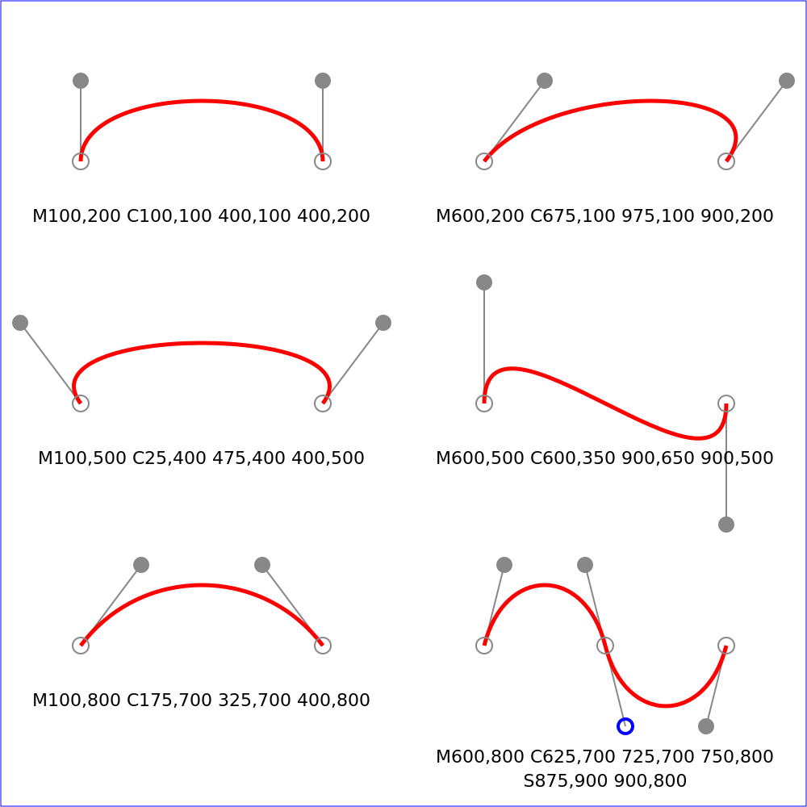
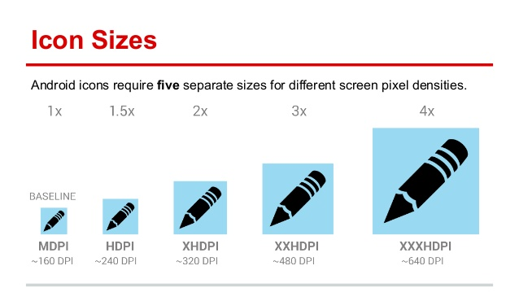
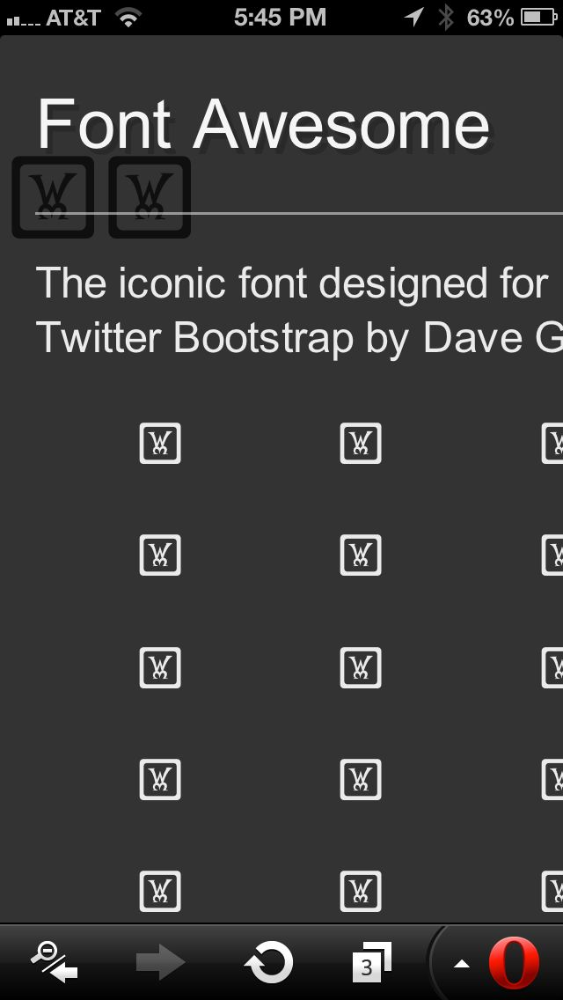
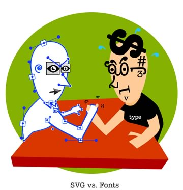
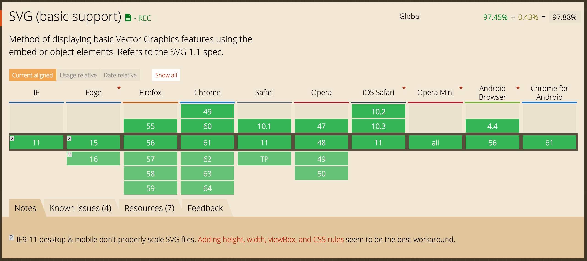
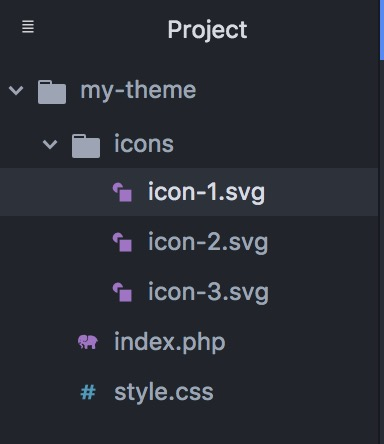

WP SVG
Working with Scalable Vector Graphics in WordPress
What this talk will cover
What SVGs are and how they work
Why SVGs are important
Icon fonts and why they are bad
How we can use SVGs
Questions
About Me
Russell Heimlich
Lead Developer at Spirited Media
Professional Toddler Chaser
What are SVGs?
SVGs are…
- XML based
- Vector
- An open standard
SVGs define points and shapes in relation to one another in space.
SVGs are good for…
- Icons
- Logos
- Charts
- Any type of flat, low-color graphic
What is a bitmap?
- A grid of pixel values
- Binary file format
- "A fixed set of dots"
JPG, GIF, TIFF, BMP are all bitmap image formats.
Color bitmaps are a grid of color values
Bitmaps are good for…
- Photos
- Continuous tones, blends of color
| SVG | Bitmap |
Why is SVG Important?
The websites we build need to work everywhere the web does!
Constraints on Graphics
- Different screen sizes
- Different resolutions (HiDPI/Retina)
- Bandwidth considerations
Graphics need to be as crisp and as performant as possible.
What about icon fonts?
Icon fonts are font files that contain symbols instead of letters or numbers.
(See Font Awesome)Icon fonts are an ugly hack!
Accessibility Issues
Font icons use characters that get read aloud by screenreaders
Clash with Emoji
Icon fonts use unicode characters to display their icon which can conflict with emoji.
See Etsy's Four Stars and a Horse bugWhen icon fonts fail…
SVGs can be just as flexible as icon fonts without the downsides.
Further Reading
Seriously, Don’t Use Icon Fonts by Tyler Sticka
Ten reasons we switched from an icon font to SVG by Ian Feather
Can we use SVGs?
YES!
 (Unless you need to support IE8 or Android 2.3)How can we use SVG files?
As an <img>

As a background image
.image {
background-image: url(/path/to/my.svg);
background-repeat: no-repeat;
height: 800px;
width: 800px;
}
A mighty tiger!
Defining an SVG Sprite
Using an SVG Sprite
Inlining an SVG Where We Want It
Downsides
Using <img> or CSS background-image offers no control of what is inside <svg> element
SVG sprites need to load all of the SVG elements on the page whether you use them or not
Inlining SVG requires lots of copy and pasting
Loading SVG Inline is AWESOME!
See the Pen Playing with SVGs by Russell Heimlich (@kingkool68) on CodePen.
Just need a pinch of CSS
svg.icon {
display: inline-block;
width: 1em;
height: 1em;
fill: currentColor;
}Pros of Inlining SVG
Only use an SVG when you need it
No extra HTTP requests
Control of <svg> elements
Takes on size and color of parent element
But what about all of that copy and pasting?
How can we use SVG in WordPress?
Enable SVGs in the Media Library with the SVG Support plugin.
Or add this snippet to functions.php
function enable_svg_mime_types( $mimes = array() ) {
$mimes['svg'] = 'image/svg+xml';
$mimes['svgz'] = 'image/svg+xml';
return $mimes;
}
add_filter( 'upload_mimes', 'enable_svg_mime_types', 10, 1 );Function for inlining SVGs
function wp_get_svg( $path = '', $args = array() ) {
if ( ! $path ) {
return;
}
$defaults = array(
'role' => 'image',
'css_class' => '',
);
$args = wp_parse_args( $args, $defaults );
$role_attr = $args['role'];
$css_class = $args['css_class'];
if ( is_array( $css_class ) ) {
$css_class = implode( ' ', $css_class );
}
if ( file_exists( $path ) ) {
$svg = file_get_contents( $path );
$svg = preg_replace( '/(width|height)="[\d\.]+"/i', '', $svg );
$svg = str_replace( '<svg ',
'<svg class="' . esc_attr( $css_class ) . '" role="' . esc_attr( $role_attr ) . '" ',
$svg );
return $svg;
}
}Helper function we can use in markup
function wp_svg_icon( $icon = '' ) {
if ( ! $icon ) {
return;
}
$path = get_template_directory() . '/icons/' . $icon . '.svg';
$args = array(
'css_class' => 'icon icon-' . $icon,
);
return wp_get_svg( $path, $args );
}Code in our theme
<h1><?php the_title(); ?></h1>
<p><?php echo wp_svg_icon( 'icon-1' ); ?></p>The rendered markup
<h1>My Awesome Post Title</h1>
<p>
</p>Folder structure of icons
We can make as many helper functions as we want for different directories of SVGs.
(See complete code snippet)Wrapping Up
Where can I get SVG icons?
Optimizing SVGs
SVGO https://github.com/svg/svgo
SVGO UI https://github.com/svg/svgo-gui
More Resources
Using SVG - CSS-Tricks.com
Mega List of SVG Information - CSS-Tricks.com
SVG Pocket Guide - Joni Trythall
Amelia Bellamy-Royds CodePen Collections - Amelia Bellamy-Royds
In Conclusion
Why aren't you using SVGs?
Now you can't say you didn't know how